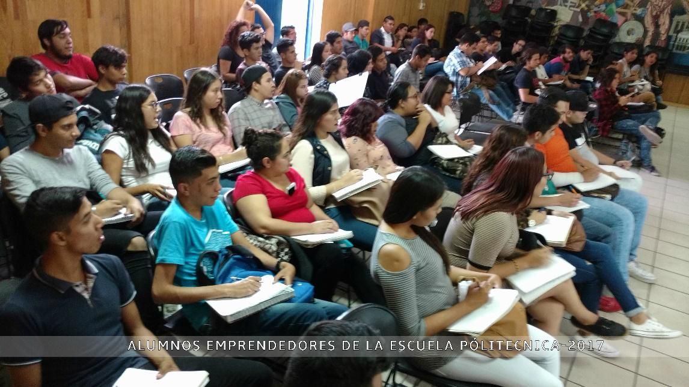
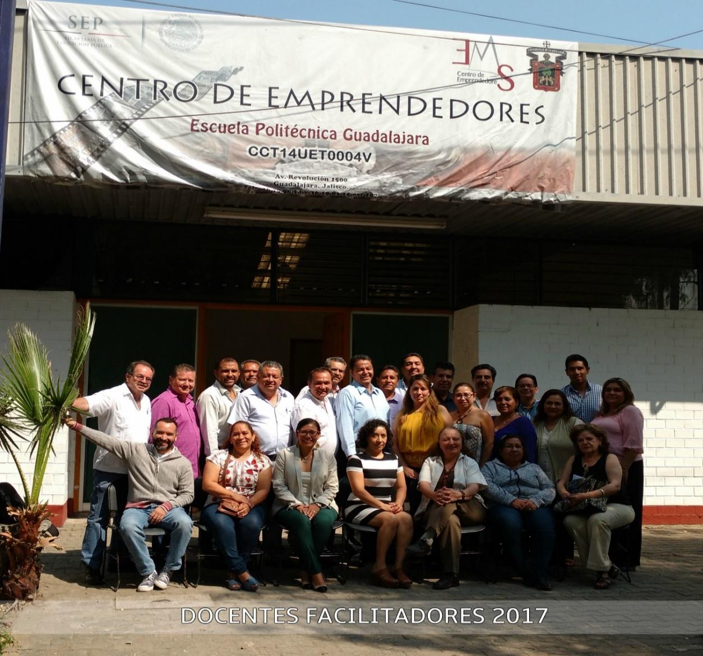
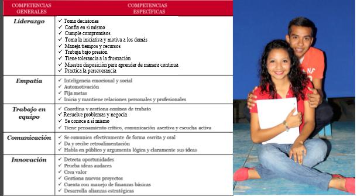

Formar a los Tecnólogos Profesionales de la Escuela Politécnica que cursan el 6° semestre en competencias para una proyección de vida Emprendedora.
El desarrollo insuficiente de competencias emprendedoras coloca a la gran mayoría de los egresados de la educación media superior casi frente a un único destino: empleos asalariados y de poca calidad. Tan sólo el 1.5% de los jóvenes ocupados de 20 a 19 años son empleadores. Es necesario brindar a los jóvenes el apoyo y las herramientas que requieran para convertirse en emprendedores, si así lo desean. En países como Estados Unidos, Alemania o Japón, la tasa de la actividad emprendedora en jóvenes de 18 a 24 años es de alrededor del 12%, mientras que en México es de apenas 6.2%. El enfoque del modelo está centrado en el desarrollo de competencias que refieren a una persona emprendedora.
El Modelo se inició en el 2013, frente a la necesidad de desarrollar habilidades emprendedoras en los jóvenes y darles otra alternativa a la de tener asalariado. El Modelo fue desarrollado por la subsecretaria de Educación Media Superior, en colaboración con Organizaciones de la Sociedad Civil, ( ASHOKA, Ángel Ventures México e impulsa); y los diferentes subsistemas de Educación Media Superior. En su corta trayectoria ya se han expandido por todo el país y se busca que el programa este en todas las instituciones públicas de la Educación Media Superior.
Promover y fomentar la vocación y la cultura emprendedora. Incrementar la calidad de la Educación, a fin de que los Tecnólogos Profesionales tengan las herramientas y escriban su propia historia de éxito. Fomentar el emprendimiento a través de talleres de formación, entrenamiento, asesorías y otras actividades. Promover ambientes emprendedores Formar docentes y estudiantes
El Modelo opera en cuatro componentes: Formación de competencias emprendedoras(Talento) Generación de ambientes y espacios(Centros Emprendedores) Estímulos para emprendedores(Becas) Vinculación con el Ecosistema Emprendedor(Salidas laterales)
El primer componente se enfoca en el ser, en el desarrollo de capacidades y habilidades que configuran una persona emprendedora; se logran mediante el desarrollo de 5 competencias: Liderazgo Empatía Comunicación Trabajo en equipo Innovación
se trata de una sinergia entre el Gobierno y las organizaciones de la Sociedad Civil y los Subsistemas de la Educación Media Superior, a fin de fomentar una Cultura Emprendedora en nuestros jóvenes. Para lograrlo, MEEMS: Consta de 2 Módulos, que suman un total de 54 horas el programa, para la formación en competencias emprendedoras:.